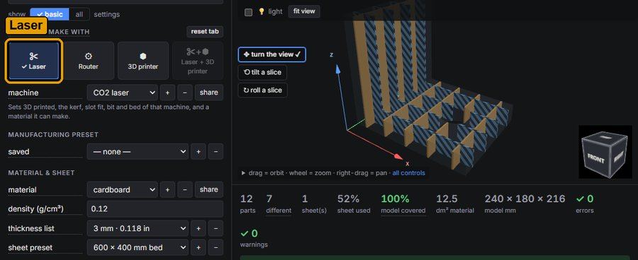
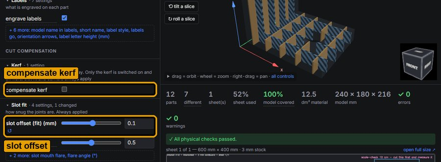
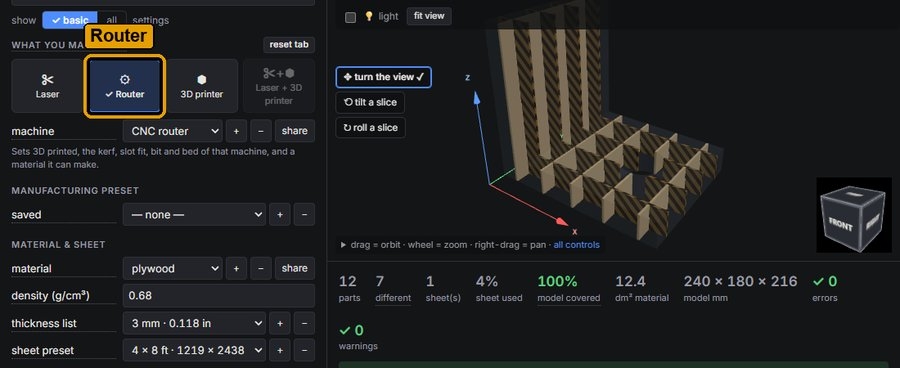
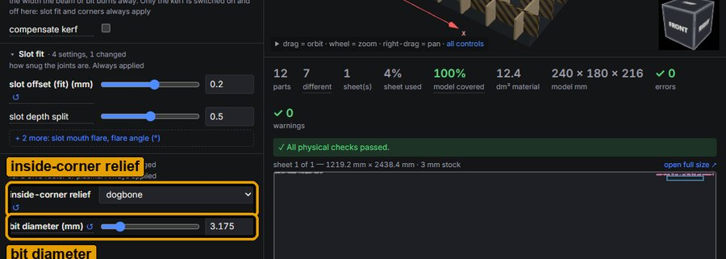
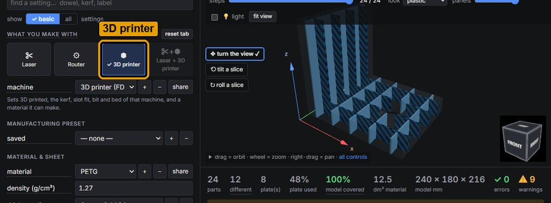
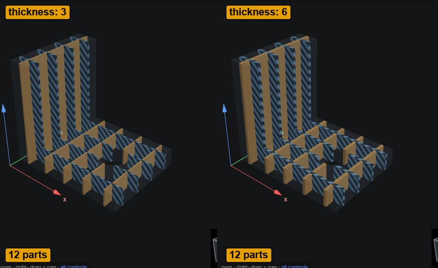

Laser cutter, CNC router or 3D printer: what each needs
Lamina makes the same flat parts for four kinds of machine. You choose the machine once, at the top of the Sheet & fit tab, under What you make with. That choice sets the machine, its bed as the sheet, and a material that the machine can make. This page shows the four choices in the same way, then what each setting on that tab changes.
- 1. Start hereThe steps every job has: your model, its size, the checks, the files. Open
- 2. Your machine: this pageThe four machines side by side, and the settings of the Sheet & fit tab.
- 3. Your techniqueThe settings of one technique, and what each one changes. Stacked, Interlocking or Folded
The four machines, side by side
| Laser | Router | 3D printer | Laser + 3D printer | |
|---|---|---|---|---|
| Use it for | Plywood, MDF, acrylic, cardboard, paper. Also a knife cutter, a plasma table, or cutting by hand. | Thick plywood and MDF. | PLA or PETG, when you have no cutter or the part is small. | Stacked layers with a gap: cut layers on printed standoffs. |
| The sheet is | Your sheet, or the bed of your laser. | Your sheet, or the bed of your router. | The bed of your printer. One sheet is one plate. | The sheet for the layers, a plate for the standoffs. |
| Settings it adds | kerf, holding bridges | inside-corner relief, bit diameter, holding bridges | For folded panels: the printed hinge and the click and snap joints | The laser's settings, and standoff shoulder |
| Test the fit | Cut the fit test. Type its answer in slot offset. | Cut the fit test. Type its answer in slot offset. | Print one seam first. Set snap fit for your printer and filament. | Cut the fit test. |
| Files | SVG and DXF for each sheet. PDF and EPS under other formats. | DXF for your CAM software, and SVG. | One 3MF for each plate. | The cut files, and one 3MF named 3D-PRINT. |
Laser
The beam burns a narrow line, the kerf, and cuts sharp inside corners. So slots fit as drawn, and the only number to find is how tight you want them.
- Click Laser, then pick your machine in machine. CO2, diode and fiber lasers are on the list,
with named machines such as Glowforge, xTool, OMTech and K40 and their bed sizes.

- Leave compensate kerf off if your laser software applies its own kerf offset, as LightBurn does. The
files are then drawn at the exact size of the parts. Turn it on to let Lamina make every part wider by the
kerf that you type. Then cut the fit test and type its answer in slot offset (fit).

Router
A round bit cannot cut a sharp inside corner. It leaves a curve as large as the bit, and the part that slots in stops short of the bottom. The router's two settings correct this.
- Click Router, then pick your machine. The material changes to one that a router cuts, and the sheet
changes to the bed of the machine: here plywood and a 4 × 8 ft sheet.

- In inside-corner relief, keep dogbone: the bit goes a little past every slot corner, so the
slot is deep enough. In bit diameter (mm), type the diameter of your bit. At 0 there is no relief.

3D printer
The printer makes each flat part at its full thickness. A shape larger than the bed prints as many parts, on as many plates as it needs. Lamina does not make G-code: your slicer does.
- Click 3D printer, then pick your printer. Bambu Lab and Prusa printers are on the list with their bed
size. The material changes to a filament, here PETG, and the sheet is now the bed: the counts show plates. A part
longer than the bed is printed in pieces, so the 12 parts of this bracket become 24 parts on 8 plates.

- The rest is in its own guide, on a model with folds: 3D print a model as flat parts.
Laser + 3D printer
The laser cuts the layers, and the printer makes the posts between them. This choice is for stacked slices with a gap between the layers, so its button is grey on the bracket of this page. On stacked slices, set connect with to standoff (3D printed), and the machine changes to Laser + 3D printer by itself. The download then holds the cut files and one print file.
What each setting on Sheet & fit changes
thickness
The real thickness of your sheet. Every slot is cut as wide as this number, so a sheet that is thinner than you typed gives loose joints.
It also changes the technique: stacked slices are one sheet thick each, so twice the thickness gives half the layers.

| Setting | What it does | It changes |
|---|---|---|
| machine | Fills the kerf, the slot fit, the corner relief and the bed with typical values for that machine. | The values stay yours to change. Cut the fit test to find the real slot offset. |
| material | Sets the list of thicknesses, the sheet sizes and the look in the 3D view. | Some checks: a sheet too thick to fold gets a warning in folded panels. |
| sheet size | The sheet that the parts are packed on. | The number of sheets. |
| compensate kerf, kerf | Makes every part wider by the width of the cut. | Off at the start: right when your laser or CAM software does this itself. |
| slot offset (fit) | How much wider than the material every slot, hole and socket is cut. + is looser, − is tighter. | How hard the parts go together. The fit test finds the number. |
| slot depth split | Where two crossing slices meet. 0.5 cuts each slot half way. | How deep the slots of each family are. |
| inside-corner relief, bit diameter | A notch for the round bit at every inside corner. | Router jobs only. With a laser, keep square. |
| holding bridges | Short stretches of each outline stay uncut. | The parts stay in the sheet while the rest is cut. Not for printed parts. |
| engrave labels | The name of each part, engraved beside it or on it. | The time on the machine. The parts are easier to find. |
Next: your technique
The machine does not change how the model is built. That is the technique: stacked slices, interlocking slices or folded panels. The checks, the fit test and the files are in Start here, steps 10 to 13.